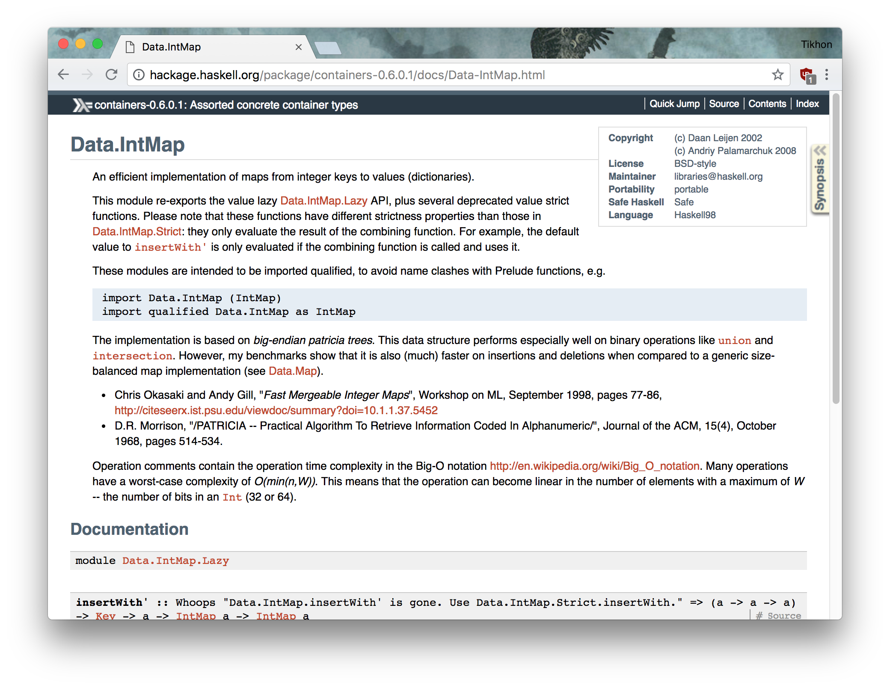
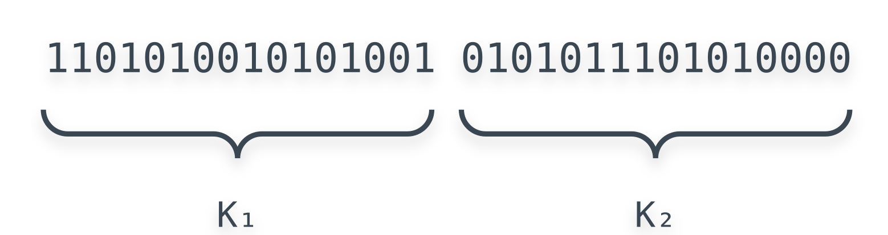
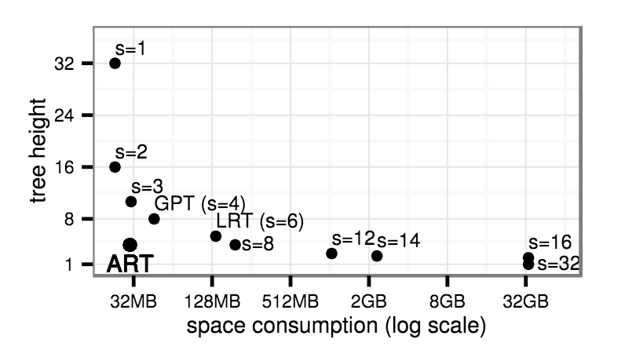
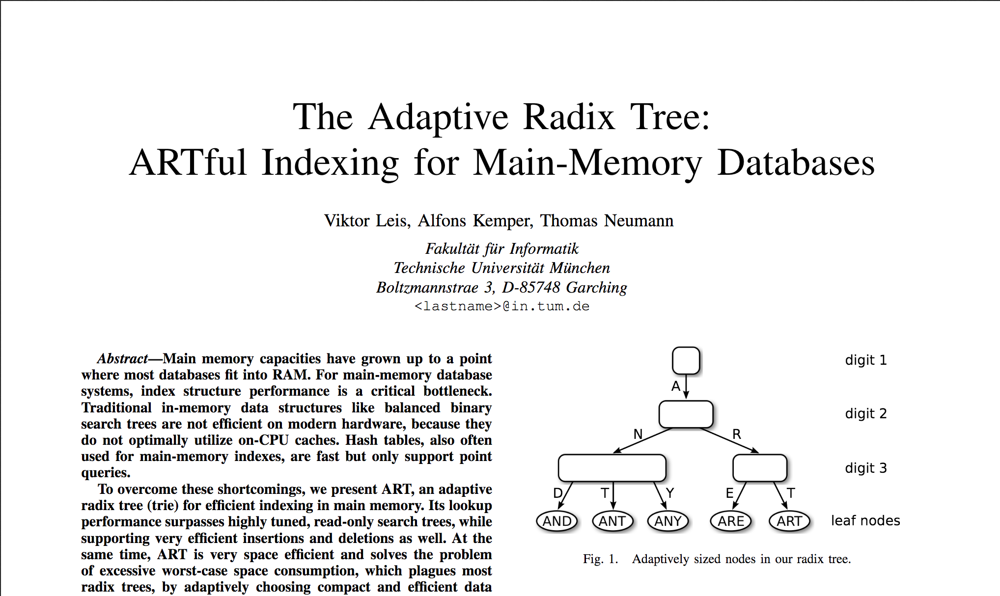
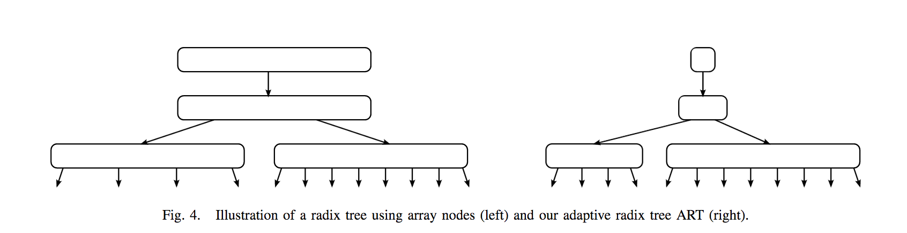
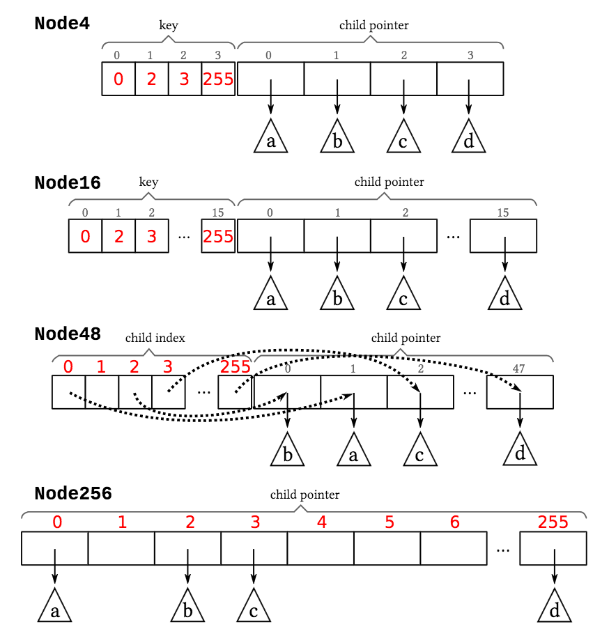

Practical Algorithm to Retrieve Information Coded in Alphanumeric

lookup “b”
b = 1
lookup “bab”
b
lookup “bab”
b → a
lookup “bab”
b → a → b = 7
every key starting with “ba”
retrieve key character by character
two keys: 00011, 00001
two keys: 00011, 00001
fully compressed radix tree
binary trie with path compression
Leaf (path, key, value)Branch (path, children)Emptytype Prefix = Int
type Mask = Int
data IntMap a =
Branch !Prefix
!Mask
!(IntMap a) !(IntMap a)
| Leaf !Prefix a
| Empty
lookup _ Empty = Nothing
lookup k (Leaf k' v)
| k == k' = Just v
| otherwise = Nothing
lookup k (Branch prefix control l r)
| getPrefix k control /= prefix = Nothing
| k .&. control == 0 = lookup k l
| otherwise = lookup k r
getPrefix k control =
key .&. complement ((control `shiftL` 1) - 1)
n bits = 2ⁿ children

from ART paper

256 children (byte at a time)


data ART a = Empty
| Leaf !Key a
| Node !Mask !Prefix !(Children a)
type Chunk = Word8
type Chunks = UArray Chunk Chunk
type Values a = Array Chunk a
type Size = Word8
data Children a =
N4 !Size !Chunks !Values
| N16 !Size !Chunks !Values
| N48 !Size !Chunks !Values
| N256 !Size !(Array Chunk (Maybe a))
Created by Tikhon Jelvis.